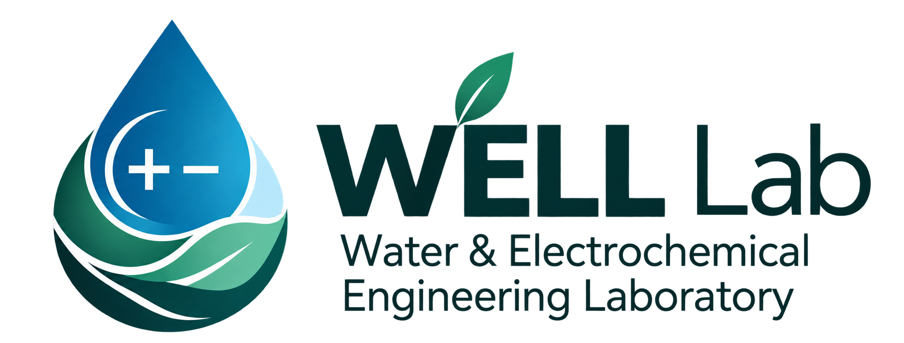
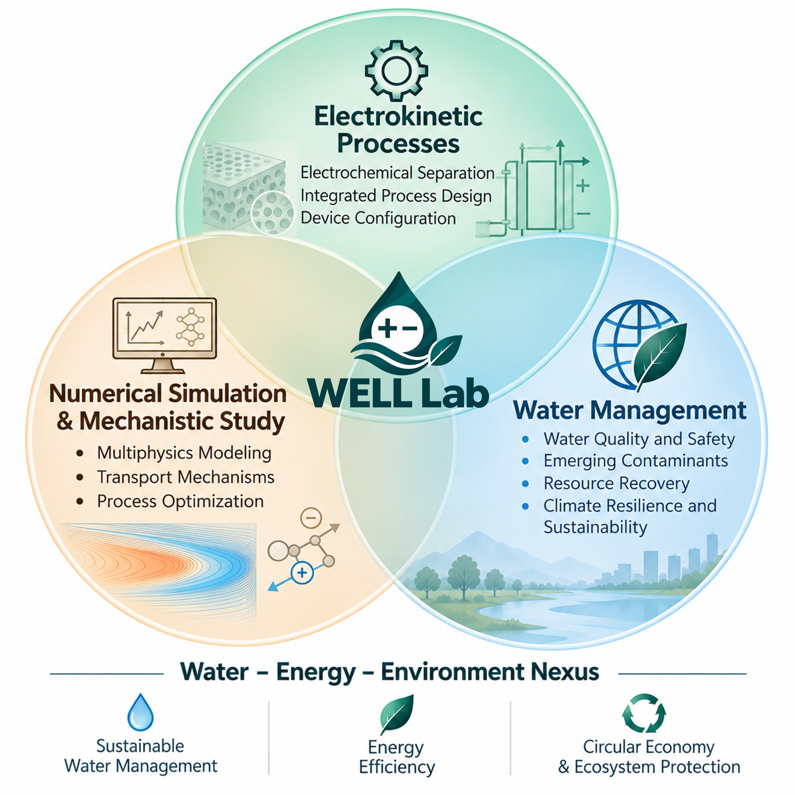

Water & Electrochemical Engineering Laboratory

Lin's Laboratory · Feng Chia University
We develop innovative electrochemical technologies for water treatment, resource recovery, and the circular economy.
About WELL Lab
Water–Energy–Environment Nexus
The Water & Electrochemical Engineering Laboratory (WELL Lab) is dedicated to advancing sustainable water and environmental technologies through interdisciplinary research.
Guided by the Water–Energy–Environment Nexus, our research integrates innovative materials, electrochemical technologies, and numerical modeling to develop efficient and environmentally sustainable solutions.
We aim to promote sustainable water management, enhance energy efficiency, and advance resource recovery and circular economy practices. Our work also addresses water quality and emerging environmental challenges, contributing to the long-term sustainability of aquatic ecosystems and the environment.

Research Framework
Research


Publications
Our selected publications and research outputs will be listed here.
Contact
WELL LAB
Feng Chia University
Department of Environmental Engineering and Science
Email:
yuilin@fcu.edu.tw